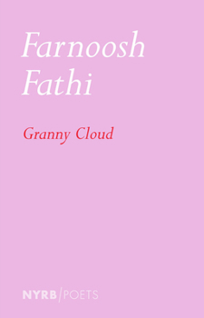
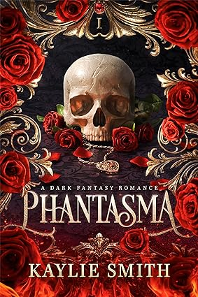
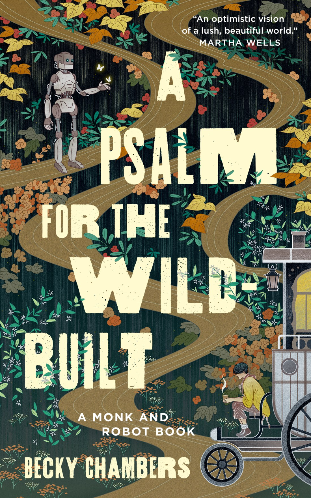

Welcome to The Next Book
This site is a collection of books I’ve read over the years. You’ll find a lot of fantasy, historical fiction, and romance in here — with a few surprises too. Click on any of the year tabs above to explore what I read each year — and maybe find something new to add to your own shelf. Hope you enjoy!

A tender and imaginative poetry collection that bridges distance, childhood, and memory.
A tender and imaginative poetry collection that bridges distance, childhood, and memory.

If you had one wish…what would you wish for? What if everyone else on the planet had one wish too? That’s EIGHT BILLION GENIES.
Eight seconds after magical genies grant every person on earth one wish, the world is transformed forever…and that’s just the beginning!

This series of elegies records the transit of grief, observing with an unflinching eye how a singular traumatic event can permanently alter our understanding of time, danger, the material world and family.

Caraval meets Throne of the Fallen in this spicy dark romantasy where a necromancer needs help from a dangerous phantom to win a deadly competition, only to find their partnership puts her at risk of breaking the game’s most vital rule: don't fall in love.

Seventeen-year-old Cassie is a natural at reading people. That is, until the FBI come knocking for a program that uses exceptional teens to crack cold cases.

Most fairytales end with a wedding and a happily-ever-after—but this is no fairytale. The updated and official translation of Under the Oak Tree, the #1 webnovel on MANTA.

Centuries before, robots of Panga gained self-awareness and left civilization, fading into myth. Now one returns to ask a tea monk: what do people need?
This series of elegies records the transit of grief, observing with an unflinching eye how a singular traumatic event can permanently alter our understanding of time, danger, the material world and family.
Caraval meets Throne of the Fallen in this spicy dark romantasy where a necromancer needs help from a dangerous phantom to win a deadly competition, only to find their partnership puts her at risk of breaking the game’s most vital rule: don't fall in love.
Seventeen-year-old Cassie is a natural at reading people. That is, until the FBI come knocking for a program that uses exceptional teens to crack cold cases.
Most fairytales end with a wedding and a happily-ever-after—but this is no fairytale. The updated and official translation of Under the Oak Tree, the #1 webnovel on MANTA.
Centuries before, robots of Panga gained self-awareness and left civilization, fading into myth. Now one returns to ask a tea monk: what do people need?